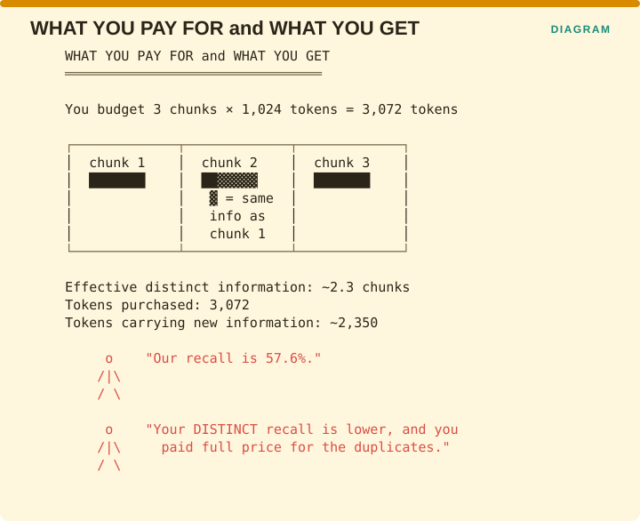

Measuring Retrieval › D.4 Token economics - the wasted-context problem
This is where efficiency stops being an infrastructure concern and becomes a quality concern, because a duplicated chunk occupies space that a genuinely new chunk could have used.
RAG-X supplies the concrete numbers (arXiv:2603.03541), and they are worse than intuition suggests. On their best-performing pipeline, at MAP 0.44 over GuidelineQA:
| Metric | Value | Reading |
|---|---|---|
| Pairwise Redundancy (contexts 1 & 2) | 22.0% | A fifth of the context overlaps |
| Exclusive Hit Rate @ rank 2 | 6.8% | Rank 2 almost never adds anything new |
| Recall | 57.6% | “Adequate coverage” |
The paper finds adequate standard recall sitting alongside overlapping evidence that wastes retrieval capacity, and prescribes Maximum Marginal Relevance for diversity together with diverse reranking as the fix.

The figure prices it. You budget three chunks of 1,024 tokens each, so you buy 3,072 tokens. Chunk 2 carries a substantial overlap with chunk 1, so the effective distinct information is closer to 2.3 chunks, meaning roughly 2,350 of those tokens are carrying new information and the rest are carrying material you already had.
A team reporting recall of 57.6% has measured how much relevant material was returned. Their distinct recall is lower than that, and they paid full price for the duplicates.
| Metric | Definition | Source |
|---|---|---|
| Pairwise Redundancy | Overlap between top-ranked contexts | RAG-X VERIFIED |
| Exclusive Hit Rate (EHR@k) | % of queries where ground truth appears in only one retrieved context | RAG-X VERIFIED |
| Prompt tokens per query | Direct cost | standard |
| Wasted-context ratio | Tokens in passages with zero attribution | proposed - approximate with WARG or EHR |
Exclusive Hit Rate is the diagnostic one, and it reads counterintuitively, so it is worth working through both directions.
On GuidelineQA, RAG-X observed the best retriever’s EHR@1 dropping to 0.1 at its highest-recall setting, which means high recall was being achieved by returning the same answer in several different chunks. On MedQuAD-GHR, EHR@1 reached 0.30, indicating a single-source-of-truth pattern where the generator’s success depends entirely on attending to the first retrieved passage.
Those two readings imply opposite engineering responses. The first says to add diversity because you are buying duplicates. The second says to protect rank 1 at all costs because nothing else is carrying the answer. One metric, two corpora, two strategies.
Add Pairwise Redundancy to your dashboard. It is cheap, requiring no language model calls and only a similarity comparison between chunks, and it is the only efficiency metric that directly reveals waste that is also costing you quality.
If redundancy is running above roughly 20%, implement Maximum Marginal Relevance before you increase k, because increasing k while redundancy is high buys you more duplicates at full token price.
Measuring Retrieval · Madhava Gaikwad · First edition, September 2026